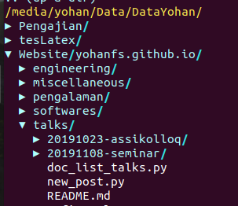

Daftar Isi
vim filename.ext
| Command | Syntax |
|---|---|
| save | :w |
| save dan quit | :wq |
| quit | :q |
| quit tanpa buffer | :q! |
| pindah ke baris (awal) | 0 |
| running Python di Vim | :w !python3 |
| set current directory | cd |
| memunculkan nomor baris | :set number |
| delete line dari line-x ke line-y | :nomorawal, nomorakhird (contoh = :4,20d) |
| copy line-x sd line-y dan paste di line-z | :noAwal, noAkhir, paste in line-z (contoh 20,30t50) |
| move line | using delete (dd), kemudian tekan p di line baru |
| move cursor satu kata ke depan | w |
| move cursor satu kata ke belakang | b |
| indent line dari line-x ke line-y | :nomorawal, nomorakhir> (controh = :4,20>) |
| memperbanyak character sebanyak n kali | (Insert mode) - (enter) Esc (enter) 90. (enter) |
| wrapping column sebanyak 90 characters | :set textwidth=90 |
| format paragraf (text width) | gqip |
| buka file di tab yang baru | t |
| delete semua contents | gg + dG |
| kopi semua line | gg + "*y + G |
| page down | CTRL + f |
| page up | CTRL + b |
Referensi
Vimrc adalah sebuah file yang berfungsi untuk konfigurasi Vim. Misalnya untuk mengatur plugin dan tampilan editor.
Lokasinya berbeda tergantung sistem operasi dan Terminal yang digunakan.
Windows
C:\Users\username\.vim\.vimrc
Git Bash
C:\Program Files\Git\etc\vimrc
Ada hal yang aneh yang saya belum pahami apabila menggunakan Vim di Git Bash. Sepertinya git bash menggunakan konfigurasi vimrc di kedua lokasi di atas secara bersamaan. Saat ini, plugin diinstall di C:\Users\username\.vim\.vimrc. Sedangkan konfigurasi lainnya, misalnya pengaturan line number dilakukan di C:\Program Files\Git\etc\vimrc.
Berikut ini adalah isi vimrc yang saya gunakan:
.vimrc
set shell=/bin/bash packloadall syntax on let g:livepreview_previewer = 'mupdf' let g:netrw_keepdir=0
vimrc
set number set tw=80
Install vim plugin tanpa pathogen, vundle, vim-plug, dll di Vim versi 8 ke atas.
set shell=/bin/bash packloadall syntax on
mkdir -p ~/.vim/pack/plugins/start
Contoh syntax:
git clone https://github.com/repo ~/.vim/pack/plugins/start/repo
Syntax tersebut artinya adalah clone sebuah direktori dan simpan file tersebut di folder start.
Referensi
Nerdtree adalah sebuah explorer untuk browsing files. Nerdtree memiliki fungsi yang sama dengan Netrw. Contoh tampilan Nerdtree adalah:
Install di Vim 8+ adalah:
git clone https://github.com/preservim/nerdtree.git ~/.vim/pack/plugins/start/nerdtree
Basic commands-nya adalah:
Referensi
Plugin latex live preview berfungsi untuk menampilkan preview dari dokumen latex.
Cara install-nya adalah:
Selanjutnya, untuk preview dokumen dibutuhkan pdf reader, misalnya menggunakan mupdf. Software tersebut dapat didownload dari download mupdf . Install di ubuntu bisa mengikuti langkah berikut:
sudo apt-get install mupdf
Add script berikut ke ~/.vimrc
let g:livepreview_previewer = 'mupdf'
Selanjutnya file tex dapat diedit dan ditampilkan preview hasil compile dengan cara:
vim filename.tex
preview: LLPStartPreview
Referensi
Netrw adalah sebuah plugin vim yang berfungsi untuk browsing file. Fungsi ini mirip seperti File Explorer.
Netrw dapat digunakan dengan cara membuka terminal di direktori yang dituju, kemudian vim. Selanjutnya tekan command= :Ex. Apabila telah browsing pada direktori tertentu, kemudian hendak keluar dari Netrw, maka working direktory akan tetap pada direktori awal. Dikarenakan saya ingin ketika telah browsing, working directory-nya adalah direktori terakhir, maka diperlukan script tambahan di ~./.vimrc sebagai berikut:
let g:netrw_keepdir=0
Selanjutnya dengan command= :sh, terminal akan dijalankan pada direktori terakhir.
Referensi
Install
git clone https://github.com/SirVer/ultisnips.git ~/.vim/pack/plugins/start/ultisnips
Tambahkan line berikut ke ~/.vimrc
let g:UltiSnipsExpandTrigger="<tab>" let g:UltiSnipsJumpForwardTrigger="<c-b>" let g:UltiSnipsJumpBackwardTrigger="<c-z>" let g:UltiSnipsEditSplit="vertical"
Edit Snippets
snippet keyword "description" option content endsnippet
Contoh:
snippet eq "equation" b
\begin{equation}
\label{eq:}
\end{equation}
endsnippet
Referensi
Lightline berfungsi untuk memberikan status atau mode masukan untuk Vim. Misalnya menunjukkan status NORMAL atau INSERT.
git clone https://github.com/itchyny/lightline.vim ~/.vim/pack/plugins/start/lightline
Tmux adalah terminal multiplexer.
Install Tmux di Git Bash Windows
Install msys2 package dan jalankan bash shell
Install Tmux dengan command: pacman -S tmux
Go to direktori msys2, misalnya di C:\msys64\usr\bin
Kopi tmux.exe dan msys-event-2-1-7.dll ke direktori Git, misalnya: ``C:Program FilesGitusrbin
Buka git bash, dan ketik tmux untuk memakai tmux
Basic Syntax
Syntax untuk mengatur sesi.
| Task | Command |
|---|---|
| membuat sesi dan attach | $ tmux |
| daftar sesi | $ tmux ls |
| attach | $ tmux attach |
| kill sesi | $ tmux kill-session |
Syntax di dalam tmux
| Task | Command |
|---|---|
| berpindah antar panel | $ CTRL + B + arrow |
| membuat shell terminal yang baru | $ CTRL + B + C |
| berpindah antar shell terminal | $ CTRL + B + N |
| berpindah ke shell berikutnya | $ CTRL + B + n |
| berpindah ke shell sebelumnya | $ CTRL + B + p |
| close panel | $ CTRL + B + x |
| split windows secara horizontal | $ CTRL + B + " |
| split windows secara vertikal | $ CTRL + B + % |
WSL adalah windows subsystem for linux. Secara sederhana, ini adalah terminal ubuntu yang tersedia di Windows.
Untuk menjalankan bisa dengan membuka Start kemudian pilih ubuntu. Cara lain adalah dengan mengetikkan command:
WSL
Di dalam Terminal ubuntu ini, Vim editor tersedia. Bisa dibuka dengan command:
vim .
Selanjutnya, vim bisa dicustom dengan menginstall plugin. Beruntung konfigurasi plugin bisa dikopi dari konfigurasi orang lain. Misalnya dari amix github
git clone --depth=1 https://github.com/amix/vimrc.git ~/.vim_runtime sh ~/.vim_runtime/install_awesome_vimrc.sh